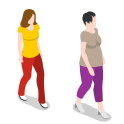
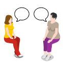
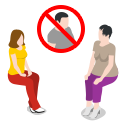

Il test di Bechdel è un metodo per stabilire se un film ritrae le donne in maniera sessista o stereotipata. In particolare, verifica la presenza delle donne in ruoli che siano rilevanti e non dipendenti esclusivamente dal loro rapporto con gli uomini.
Per passare il test un film deve soddisfare tutte e tre le seguenti condizioni:
|  | 1) Nel film sono presenti almeno due donne e hanno un nome. |
|  | 2) Le due donne parlano almeno una volta tra di loro. |
|  | 3) Le due donne parlano tra di loro di qualcosa che non sia un uomo. |